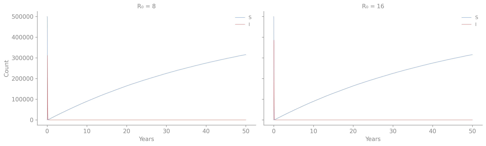
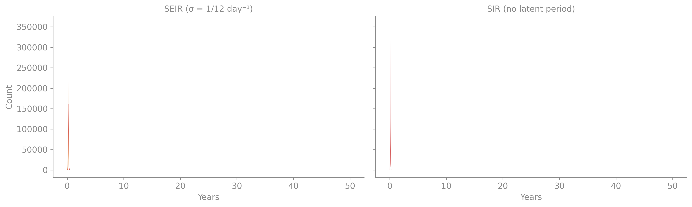
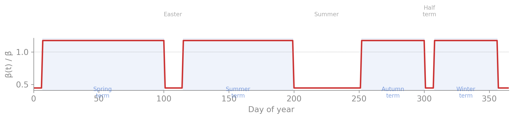
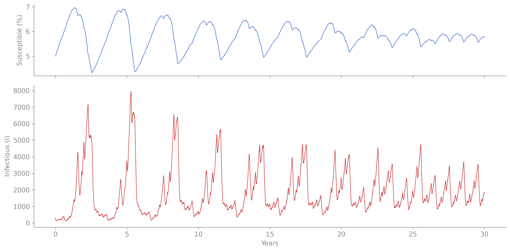
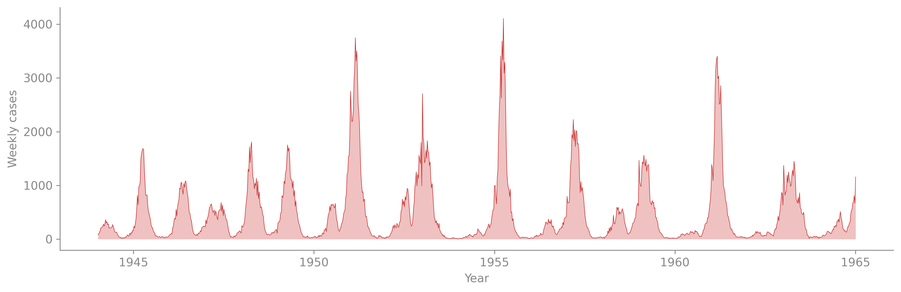
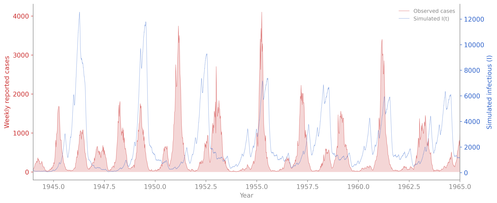
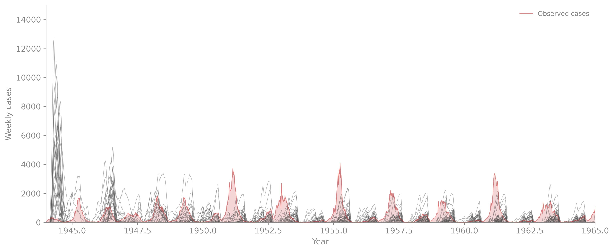
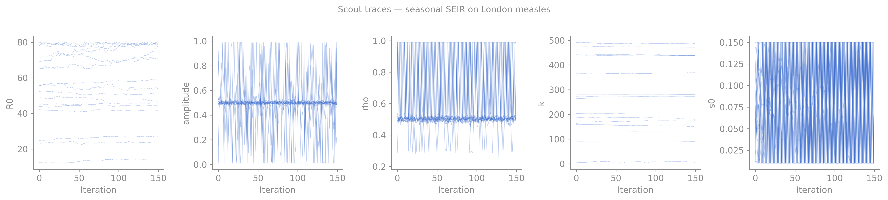

Measles: Building the He et al. Model
The previous chapters fit an SIR model to 14 days of a boarding-school influenza outbreak — a closed population, two free parameters, a single epidemic wave. That was the simplest interesting inference problem.
Measles in London is a different beast. The 1978 boarding school had 763 boys and lasted two weeks. London in the 1950s had 3.5 million people and measles came back every year or two for decades. To model that, we need machinery the boarding-school SIR doesn’t have: births that refill the susceptible pool, a latent period, seasonal forcing from the school calendar, and an observation model that accounts for incomplete reporting.
This chapter builds the He et al. (2010) London measles SEIR step by step. Each section adds one mechanism and shows what it does to the dynamics. By the end, every line of the full model is recognizable.
From outbreak to endemic: why demography matters
The boarding-school SIR is a closed population — no one enters or leaves. The epidemic burns through the susceptible pool and dies out. That’s fine for a two-week flu. But measles in a city persists for decades because new children are born susceptible.
Adding births and deaths to the SIR is the single biggest conceptual step in this chapter: it turns an outbreak model into an endemic model.
# SIR with demography — the simplest endemic model
# An open population where births refill susceptibles,
# allowing repeated epidemics instead of a single outbreak.
time_unit = 'days
compartments { S, I, R }
parameters {
beta : rate # transmission rate (per day per infective)
gamma : rate # recovery rate (per day)
mu : rate # birth = death rate (per day, balanced)
N0 : count # total population
}
transitions {
infection : S --> I @ beta * S * I / N0
recovery : I --> R @ gamma * I
# Demography: births into S, deaths from all compartments
birth : --> S @ mu * N0
death_S : S --> @ mu * S
death_I : I --> @ mu * I
death_R : R --> @ mu * R
}
init {
S = N0 - 10
I = 10
R = 0
}
simulate {
from = 0 'days
to = 50 'years
}Three lines changed from the boarding-school SIR:
birth : --> S @ mu * N0— new susceptibles enter at rate μ × Ndeath_S : S --> @ mu * S— individuals leave each compartment at the same rate- The population stays roughly constant: births ≈ deaths when both happen at rate μ.
The death rate μ = 0.02/yr (≈ 0.0000548/day) is tiny on any given day, but over 50 years it completely replaces the population. For measles with R₀ ≈ 15–20, the susceptible pool drains in weeks but refills over years — and that interplay is what generates recurrent epidemics.
Compare this to the boarding-school SIR: one epidemic, done. Here, susceptibles accumulate via births until the epidemic threshold is crossed, the epidemic fires, and the cycle repeats. The inter-epidemic period depends on R₀ — higher R₀ means fewer susceptibles needed to trigger an outbreak, so epidemics recur faster.
This is already a useful model of endemic disease. But it’s missing features that matter for measles specifically.
Adding a latent period: from SIR to SEIR
Measles has an incubation period of 8–13 days — you’re infected but not yet infectious. The SIR model doesn’t capture this: infection and infectiousness happen simultaneously. The SEIR model adds an Exposed (E) compartment where individuals incubate before moving to I.
# SEIR with demography — adding a latent period
# For measles: incubation ≈ 8–13 days (1/sigma ≈ 12 days).
compartments { S, E, I, R }
sigma : rate # latent rate (1/sigma = mean incubation period)
latency : E --> I @ sigma * EThe new pieces: compartments { S, E, I, R }, a sigma : rate parameter (1/σ = mean incubation period), and the transition latency : E --> I @ sigma * E. Everything else is identical to the SIR.

The latent period acts as a low-pass filter on the dynamics: each epidemic wave is broader and lower-peaked than the SIR equivalent, because the exposed-to-infectious delay smears the surge over time. For inference, this means σ and γ interact — a longer latent period paired with a shorter infectious period can produce similar epidemic curves, creating a compensation ridge in the likelihood surface (a theme we’ll return to in the fitting chapter).
School-term forcing: where biennial epidemics come from
The endemic SEIR produces recurrent epidemics, but their timing is irregular — determined by when the susceptible pool happens to cross the epidemic threshold. Real measles in pre-vaccination London showed a strikingly regular biennial pattern: large epidemics every other year, with smaller waves in between.
The mechanism is school-term forcing (Fine & Clarkson 1982, Schenzle 1984). Children mix intensely during school terms and barely at all during holidays. The transmission rate β(t) oscillates between a high value (term-time) and a low value (holidays) with the school calendar.

In camdl, school-term forcing uses a periodic block in the forcing {} section:
forcing {
school : periodic {
period = 365.25 'days
step = 1 'days
on = [7:100, 115:199, 252:300, 308:356]
}
}The school(t) function returns 1 during term days and 0 during holidays. The transmission rate then modulates as β_base × seas where seas = 1 - a + a × (1 + 0.2411/0.7589) × school(t), ensuring the time-averaged forcing equals 1.

The biennial pattern emerges from the interaction between two clocks: the annual school calendar and the multi-year susceptible replenishment cycle. A large epidemic in year 1 depletes susceptibles so far below the threshold that the next winter’s forcing can’t trigger a full outbreak — only a small wave. That leaves more susceptibles for year 3, producing a large epidemic again. The period depends on R₀, the amplitude of forcing, and the birth rate — and it’s not always biennial. At different parameter values the model produces annual, biennial, or chaotic dynamics, which is part of what makes inference hard.
The London measles data
Now we can see what we’re actually trying to fit. The data are weekly notified measles cases in London, 1944–1965 — 1096 observations over 21 years.

Can the simple SEIR explain this data?
Before adding more machinery, it’s worth asking: how far does the seasonal SEIR already get? We can simulate the seasonal model at roughly measles-like parameters (R₀ ≈ 17, 12-day latent and infectious periods, amplitude ≈ 0.55) and overlay on the observed data. The model doesn’t have reporting (ρ), so we compare the shape and timing rather than the absolute scale.

The seasonal SEIR gets the basic biennial pattern right — epidemics recur roughly every two years, peaking in winter. But the comparison reveals exactly what’s missing:
- Scale. The model simulates true infections; the data are reported cases. He et al. estimate ρ ≈ 0.49, meaning roughly half of infections go unreported. Without a reporting fraction, we can’t compare counts directly.
- Amplitude variation. The model’s epidemic peaks are roughly constant; the data shows a declining trend (the 1940s epidemics are much larger than the 1960s). This comes from London’s changing population and birth rate — time-varying covariates the simple model doesn’t have.
- Stochastic variation. Even within the biennial cycle, real epidemics vary in size and timing in ways that a single stochastic trajectory can’t match consistently. The
overdispersed()primitive adds day-to-day noise in the force of infection. - Irregular inter-epidemic troughs. The data shows non-zero cases even between epidemics. The importation rate ι (a few cases/year from outside London) sustains low-level transmission during troughs.
The next sections add these features to reach the full He et al. model.
Fitting the seasonal SEIR: prior predictive check
Before fitting, we should check what the model predicts before seeing data. A prior predictive check draws parameters from the prior and simulates — if the prior envelope doesn’t overlap the data at all, the fit will fail before it starts.
We use measles-informed ranges: R₀ ∈ [10, 60], amplitude ∈ [0.1, 0.9], ρ ∈ [0.1, 0.9], s₀ ∈ [0.01, 0.12]. These aren’t arbitrary — they reflect the literature on measles dynamics in pre-vaccination populations.

Fitting with IF2
We add a NegBin observation model to the seasonal SEIR (weekly reported recoveries, reporting fraction ρ, overdispersion k) and fit to the London data with IF2. Five parameters are estimated — R₀, amplitude, ρ, k, and the initial susceptible fraction s₀ — with σ, γ, μ, and N₀ fixed at literature values.
# IF2 fit: seasonal SEIR to London measles data
[model]
camdl = "models/seir_seasonal_fit.ir.json"
output_dir = "results/seir_seasonal"
[data.observations]
weekly_cases = "data/he2010_london_cases.tsv"
[config]
backend = "chain_binomial"
dt = 1.0
[estimate]
R0 = { bounds = [10.0, 60.0], start = 30.0, rw_sd = 0.02 }
amplitude = { bounds = [0.1, 0.9], start = 0.5, rw_sd = 0.02 }
rho = { bounds = [0.1, 0.9], start = 0.5, rw_sd = 0.02 }
k = { bounds = [1.0, 500.0], start = 50.0, rw_sd = 0.02 }
s0 = { bounds = [0.01, 0.12], start = 0.05, rw_sd = 0.02, ivp = true }
[fixed]
sigma = 0.0791
gamma = 0.0832
mu = 0.0000548
N0 = 3500000
[stages.scout]
method = "if2"
chains = 16
particles = 1000
iterations = 150
cooling = 0.90
[stages.refine]
method = "if2"
chains = 8
particles = 2000
iterations = 200
cooling = 0.98
starts_from = "scout"$ camdl fit run fit_seir_seasonal.toml --seed 42
/bin/sh: line 0: cd: he2010: No such file or directoryScout convergence

Best scout log-likelihood: -11302.1 (chain 10)
| parameter | Rhat | status |
|---|---|---|
R0 |
23.367 | ✗ |
amplitude |
1.011 | ✓ |
rho |
1.257 | ✗ |
k |
142.680 | ✗ |
s0 |
0.998 | ✓ |
What the diagnostics tell us
The scout found a best log-likelihood of about −11,300 — the model can explain some of the data, but not well. The convergence diagnostics are worse: R₀ and k have Rhat values above 10, meaning chains are exploring completely different basins. This is the seasonal SEIR telling us it’s not the right model for this data.
The specific failures point to specific gaps:
- R₀ multimodality — without importation (ι), inter-epidemic troughs go to exactly zero infections, and the model can match the data equally well at very different R₀ values by adjusting the timing of extinction and re-seeding.
- k wandering — the NegBin overdispersion parameter absorbs variance that should come from process noise (
overdispersed()) and time-varying covariates. Without those, k has to do too much work. - s₀ at lower bound — the initial susceptible fraction is pinned at 1%, suggesting the model needs a different initialization strategy (warm-up period or covariate-informed initial conditions).
These are not fitting failures — they’re the model telling us what it needs. Each gap maps to a specific feature in the full He et al. model.
What’s still needed: the full He et al. model
The seasonal SEIR gets the biennial pattern right but can’t fit the data quantitatively. The remaining mechanisms — time-varying covariates, importation, process noise, cohort births, and the He et al. observation model — address the specific failures we just diagnosed:
Time-varying covariates. interpolated forcing for pop(t) and birthrate(t) replaces the fixed N₀ and μ:
forcing {
pop : interpolated {
data = "data/he2010_london_covariates.tsv"
time_col = t; value_col = pop; method = "linear"
}
birthrate : interpolated {
data = "data/he2010_london_covariates.tsv"
time_col = t; value_col = birthrate; method = "linear"
}
}Importation (ι ≈ 3 cases/year from outside London) sustains low-level transmission during inter-epidemic troughs — without it, the model goes to zero and can only restart via stochastic fluctuation.
Process noise via overdispersed() adds Gamma-distributed noise to the force of infection. This is the He et al. “environmental stochasticity” that we saw outperform NegBin observation noise in the model comparison chapter.
Cohort births via events {} — children enter school once per year, creating an annual pulse of new susceptibles.
The observation model — weekly reported recoveries with reporting fraction ρ and overdispersion ψ (He et al. eq. 6).
The complete he2010_london.camdl:
time_unit = 'days
compartments { S, E, I, R }
parameters {
R0 : positive in [1.0, 100.0]
sigma : rate in [0.01, 0.5] # 1/latent period (day^-1)
gamma : rate in [0.01, 0.5] # 1/infectious period (day^-1)
mu : rate in [1e-6, 0.01] # death rate (day^-1)
alpha : positive in [0.5, 1.0] # mixing exponent
iota : positive in [0.0001, 0.1] # importation (cases/day; 0.1 ≈ 36/yr)
sigma_se : positive in [0.001, 5.0] # extra-demographic noise (σ² in daily units)
amplitude : probability in [0.0001, 0.9999] # term-time forcing amplitude
cohort : probability in [0.0001, 0.9999] # fraction of births entering at school start
rho : probability in [0.0001, 0.9999] # reporting probability
psi : positive in [0.001, 1.0] # measurement overdispersion (He et al. eq. 6)
s0 : probability in [0.005, 0.25] # initial susceptible fraction (He et al. MLE ≈ 0.0297)
e0 : probability in [1e-6, 0.01] # initial exposed fraction
i0 : probability in [1e-6, 0.01] # initial infected fraction
N0 : count in [1000, 10000000]
}
# ── Time-varying covariates ──────────────────────────────────────────────────
# Monthly data pre-interpolated by R's smooth.spline().
# Birthrate lagged 4 years (school entry delay).
# Source: bench/he2010/01_pomp_reference.R → data/he2010_london_covariates.tsv
forcing {
pop : interpolated {
data = "data/he2010_london_covariates.tsv"
time_col = t
value_col = pop
method = "linear"
}
birthrate : interpolated {
data = "data/he2010_london_covariates.tsv"
time_col = t
value_col = birthrate
method = "linear"
}
# UK school calendar matching pomp exactly:
# Term days 7–100, 115–199, 252–300, 308–356
# 277 school days / 365 = 0.7589 fraction
school : periodic {
period = 365.25 'days
step = 1 'days
on = [7:100, 115:199, 252:300, 308:356]
}
}
# ── Rate expressions ─────────────────────────────────────────────────────────
# Beta: Euler-multinomial correction matching pomp
let beta_base = R0 * (1.0 - exp(-(gamma + mu)))
# Seasonal forcing: mean(seas) = 1 over the year
# With 277/365 school fraction, the normalization is exact
let seas = 1.0 - amplitude + amplitude * (1.0 + 0.2411 / 0.7589) * school(t)
# Births: deterministic, matching pomp's nearbyint(pop*br*dt)
# birthrate is per-capita per-year, convert to daily
let daily_births = birthrate(t) * pop(t) / 365.25
transitions {
# Infection with environmental noise
infection : S --> E @ overdispersed(beta_base * seas * S * ((I + iota) ^ alpha) / pop(t), sigma_se)
latency : E --> I @ sigma * E
recovery : I --> R @ gamma * I
# Continuous births only (no cohort pulse — that's in events {})
birth : --> S @ deterministic((1.0 - cohort) * daily_births)
# Deaths
death_S : S --> @ mu * S
death_E : E --> @ mu * E
death_I : I --> @ mu * I
death_R : R --> @ mu * R
}
init {
S = s0 * N0
E = e0 * N0
I = i0 * N0
R = N0 - s0 * N0 - e0 * N0 - i0 * N0
}
# Cohort: children enter school once per year on day 251.
# Uses events {} block — the engine handles once-per-period scheduling
# correctly (no mod() arithmetic, no double-firing from fractional drift).
events {
# at_day 258 = day 251 of calendar year + 7 day offset (t=0 is Dec 24)
cohort_entry : add(S, cohort * birthrate(t) * pop(t))
every 365.25 'days at_day 258
}
# Match pomp's R = nearbyint(pop) - S - E - I constraint.
# Without this, the cohort pulse creates 20K phantom susceptibles/year
# (births into S with no corresponding reduction of R). The balance
# keeps S+E+I+R = pop(t) by absorbing the pulse into R.
balance {
R = pop(t) - S - E - I
}
# He et al. observe C = cumulative I→R recoveries per week.
# The E→I→R pipeline (~24 day residence) low-pass filters the Gamma noise.
# Observation model: discretized Normal (He et al. 2010, eq. 6)
# mean = rho * C
# var = rho * C * (1 - rho + psi^2 * rho * C)
observations {
weekly_cases : {
projected = incidence(recovery)
every = 7 'days
likelihood = normal(
mean = rho * projected,
sd = sqrt(rho * projected * (1.0 - rho + psi * psi * rho * projected))
)
}
}
simulate {
from = 0 'days
to = 21 'years
}Twelve parameters, time-varying forcing from three sources, and a non-trivial observation model. The fitting chapter will show what happens when IF2 meets this full model — which parameters converge, which form ridges, and what the diagnostics look like on a real-world inference problem.